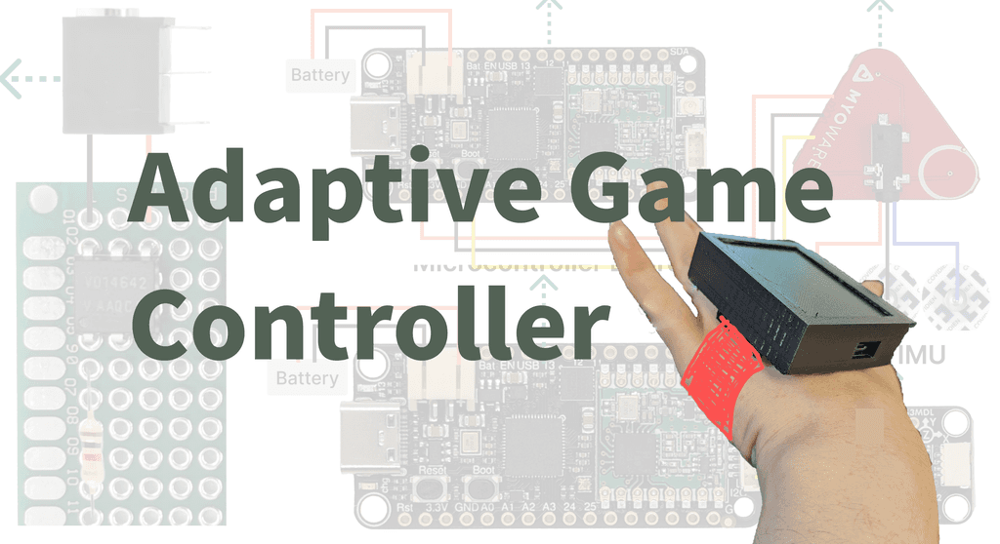

Comparing Narrative Inquiry Methods to Support the Design of Adaptive Gaming Controller Accessories for People with Upper Limb Motor Disabilities

Overview
This research investigates accessible DIY game controllers for individuals with upper limb motor disabilities, emphasizing user participation throughout the design process and open-source tools for personalized solutions.
Research Contributions
- Built adaptive game controller prototypes as primary hardware for user evaluation
- Performed qualitative analysis on interview data to compare thematic and dialogic/performance analysis methods
- Evaluated the efficacy of narrative inquiry in capturing the lived experiences of users with upper-limb motor disabilities
- DIY empowerment model: enabling disabled individuals to build their own controllers using open-source tools